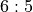
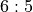
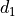
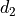
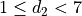
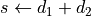

CrapsGame Class¶
In Throw Class, we roughed out a stub version of CrapsGame
that could be used to test Throw. We extended that stub in Craps Table Class.
In this chapter, we will revise the game to provide the complete
process for Craps. This involves a number of features, and we will have
a state hierarchy as well as the Game class itself.
In the process of completing the design for the CrapsGame class, we
will uncover another subtlety of craps: winning bets and losing bets.
Unlike Roulette, where a Bin contained winning Outcome instances
and all other Outcome instances where losers, Craps includes winning
Outcome instances, losing Outcome instances, and unresolved Outcome instances.
This will lead to some rework of previously created Craps classes.
In Craps Game Analysis we’ll examine the game of craps in detail. We’ll look at four topics:
Game State will address how the game transitions between point on and point off states.
The Game State Class Hierarchy will look at the State design pattern and how it applies here.
In Resolving Bets we’ll look at how game, table, and player collaborate to resolved bets.
In Movable Bets we’ll look at how the game collaborates with bets like the Pass Line bet which have an outcome that moves.
In Design Decision – Win, Lose, Wait we’ll look at bet payoff issues.
In Additional Craps Design we’ll revisit our algorithm for building
Outcome instances and Throw instances and creating the Dice.
This chapter involves a large amount of programming. We’ll detail this in Craps Game Implementation Steps.
We’ll look at preliminary rework in a number of sections:
Once we’ve cleaned up the Throw and Bet classes, we
can focus on new development for the Craps game.
In CrapsPlayer Class Stub we’ll rough out a design for a player.
We’ll define the game states in the following sections:
CrapsGameState Class will address the superclass,
CrapsGamePointOff Class will look at the point off state, and
CrapsGamePointOn Class will look at the point on state.
In CrapsGame Design we’ll define the overall game class. We’ll enumerate the deliverables for this chapter in Craps Game Deliverables.
We’ll look at some additional game design issues in Optional Working Bets.
Craps Game Analysis¶
Craps is considerably more complex than Roulette. As noted in Craps Details,
there is a multi-step procedure that involves state changes, multiples rounds
of betting, and bets that move from generic (“Come” or “Pass Line”) to specific
numbers based on the current Throw instance.
We can see several necessary features to the CrapsGame:
Resolving Bets, and
Movable Bets when a point is established.
Also, we will discover some additional design features to add to other classes.
Game State¶
A CrapsGame object cycles through the various steps of the
Craps game; this sequence is shown in Game State.
Since we will follow the State design pattern, we have three
basic design decisions. First, we have to design the state class
hierarchy to own responsibilities for the unique processing present in each of the
individual states. Second, we have to design an interface for the game
state objects to interact with the overall CrapsGame.
Third, we will need to keep an object in the CrapsGame
which contains the current state. Each throw of the dice will update the
state, and possibly resolve game bets. To restart the game, we can
create a fresh object for the initial point-off state.
The following procedure provides the detailed algorithm for the game of Craps.
A Single Game of Craps
Point Off State. The first throw of the dice is made with no point. This game may be resolved in a single throw of the dice, no point will be established. If a point is established the game transitions to the Point On State.
Place Bets. The point is off; this is the come out roll. Notify the
Playerinstance to createBetinstances. The real work of placing bets is delegated to thePlayerclass. Only Pass and Don’t Pass bets will be allowed by the current game state.Odds Bet Off? Optional, for some casinos only. For any odds bets behind a come point, interrogate the player to see if the bet is on or off. These bets were unresolved because the previous game ended in a winning point.
Come-Out Roll. Get the next throw of the
Diceobject, giving the winningThrowinstance, t. TheThrowobject contains the individualOutcomeinstances that can be resolved on this throw.Resolve Proposition Bets. For each
Betobject, b, placed on a one-roll proposition:
Proposition Winner? If
Betb’sOutcomeinstance is in the winningThrow, t, then notify thePlayerobject thatBetb was a winner. Update thePlayerobject’s stake. Note that the odds paid for winning field bets and horn bets depend on theThrowobject.Proposition Loser? If
Betb’sOutcomeis not in the winningThrow, t, then notify thePlayerthatBetb was a loser. This allows thePlayerto update their betting amount for the next round.Natural? If the throw is a 7 or 11, this game is an immediate winner. The game state must provide the Pass Line
Outcomeinstance as a winner.For each
Bet, b:
Come-Out Roll Natural Winner? If
Betb’sOutcomeinstance is in the winning game state, then notify thePlayerobject thatBetb was a winner and update thePlayerobject’s stake. TheThrowinstance will contain outcomes to make sure a Pass Line bet is a winner, and a Don’t Pass bet is a loser.Come-Out Roll Natural Loser? If
Betb’sOutcomeinstance is not in the winning game state, then notify thePlayerobject thatBetb was a loser. This allows thePlayerobject to update the betting amount for the next round. A Pass Line bet is a loser, and a Don’t Pass bet is a winner.Craps? If the throw is a 2, 3, or 12, this game is an immediate loser. The game state must provide the Don’t Pass Line
Outcomeinstances as a winner; note that 12 is a push in this case, requiring special processing by theBetor theOutcome: the bet amount is simply returned.For each
Bet, b:
Come-Out Roll Craps Winner? If
Betb’sOutcomeinstance is in the winning game state and the bet is working, then notify thePlayerobject thatBetb was a winner and update thePlayerobject’s stake. If the bet is not working, it is ignored.Come-Out Roll Craps Loser? If
Betb ‘sOutcomeinstance is not in the winning game state and the bet is working, then notify thePlayerobject thatBetb was a loser. If the bet is not working, it is ignored.Point Established. If the throw is a 4, 5, 6, 8, 9 or 10, a point is established. The game state changes, to reflect the point being on. The Pass Line and Don’t Pass Line bets have a new
Outcomeinstance assigned to them, based on the point.
Point On State. While the game remains unresolved, the following steps are performed. The game will be resolved when the point is made or a natural is thrown.
Place Bets. Notify the player to place any additional bets. In this game state all bets are allowed.
Point Roll. Get the next
Throwinstance from theDiceobject.Resolve Proposition Bets. Resolve any one-roll proposition bets. This is the procedure described above for iterating through all one-roll propositions. See Resolve Proposition Bets.
Natural? If the throw was 7, the game is a loser. Resolve all bets; the game state will show that all bets are active. The game state will include Don’t Pass and Don’t Come bets as winners, as will any of the six point bets created from Don’t Pass and Don’t Come Line bets. All other bets will lose, including all hardways bets.
This throw resolves the game, changing the game state: the point is off.
Point Made? If the throw was the main game point, the game is a winner. Resolve Pass Line and Don’t Pass Line bets, as well as the point and any odds behind the point.
Come Point and Don’t Come Point bets (and their odds) remain for the next game. A Come Line or Don’t Come Line bet will be moved to the appropriate Come Point.
This throw ends the game, changing the game state. The point is off; odds placed behind Come Line bets are not working for the come out roll.
Other Point Number? If the throw was any of the come point numbers, come bets on that point are winners. Resolve the point come bet and any odds behind the point. Also, any buy or lay bets will be resolved as if they were odds bets behind the point; recall that the buy and lay bets involved a commission, which was paid when the bet was created.
Hardways? For 4, 6, 8 and 10, resolve hardways bets. If the throw was made the hard way (both dice equal), a hardways bet on the thrown number is a winner. If the throw was made the easy way, a hardways bet on the thrown number is a loser. If the throw was a 7, all hardways bets are losers. Otherwise, the hardways bets remain unresolved.
The Game State Class Hierarchy¶
We have identified some processing that is unique to each game state. Both states will have a list of allowed bets, a list of non-working bets, a list of throws that cause state change and resolve game bets, and a list of throws that resolve hardways bets.
In the Craps Table (Craps Table Analysis), we allocated some
responsibilities to the CrapsGame class so that a CrapsTable instance
could validate bets and determine which bets were
working.
Our further design details have shown that the work varies by game state.
Therefore, the methods in the CrapsGame class
will delegate the real work to each state’s methods. The current
stub implementation checks the value of the point variable to
determine the state. We’ll replace this with a call to an appropriate
method of the current state object.
State Responsibilities.
Each CrapsGameState subclass, therefore, will have an isValid()
method that implements the state-specific bet validation rules. In this case, a
point-off state object only allows the two Pass Line bets: Pass Line,
Don’t Pass Line. The point-on state allows all bets. Additionally, we’ve
assigned to the CrapsTable class the responsibility to determine if the total
amount of all a player’s bets meets or exceeds the table limits.
Each subclass of the CrapsGameState class will override an isWorking()
method with one that validates the state-specific rules for the working
bets. In this case, a point-off state object will identify the the six
odds bets placed behind the come point numbers (4, 5, 6, 8, 9 and 10) as
non-working bets, and all other bets will be working bets. A point-on
state object will simply identify all bets as working.
The subclasses of the CrapsGameState class will need methods with
which to collaborate with a Throw object to update the
state of the current CrapsGame instance.
Changing Game State. We have identified two game states: point-off
(also know as the come out roll) and point-on. We have also set aside
four methods that the various Throw objects will use to
change the game state. The interaction between the CrapsGame class,
the four kinds of Throw subclasses and the two subclasses of CrapsGameState instances works as follows:
There are 36 instances of
Throw, one of which was selected at random to be the current throw of the dice.The
CrapsGameobject calls theThrowobject’supdateGame()method. Each of the subclasses ofThrowhave different implementations for this method.The
Throwobject calls back to one of theCrapsGameobject’s methods to change the state. There are four methods available:craps(),natural(),eleven(), andpoint(). Different subclasses of theThrowclass will call an appropriate method for the kind of throw.The
CrapsGameobject has a current state, embodied in aCrapsGameStateobject. The game will delegate each of the four state change methods (craps(),natural(),eleven(), andpoint()) to the currentCrapsGameStateobject.In parallel with
CrapsGameclass, eachCrapsGameStatesubclass has four state change methods (craps(),natural(),eleven(), andpoint()). Each state provides different implementations for these methods. In effect, the two states and four methods create a kind of table that enumerates all possible state change rules.
Complex? At first glance the indirection and delegation seems like a lot of overhead for a simple state change. When we consider the kinds of decision-making this embodies, however, we can see that this is an effective solution.
When one of the 36 available Throw instances
has been chosen, the CrapsGame instance calls a single method to
update the game state. Because the various subclasses of the Throw class
are polymorphic, they all respond with unique, correct behavior based on state.
Similarly, each of the subclasses of the Throw class use one
of four methods to update the CrapsGame object, without having to
discern the current state of the game. We can consider the
CrapsGame class as a kind of façade over the methods of the polymorphic
CrapsGameState subclasses. Our objective is to do the decision-making
once when the object is created; this makes all subsequent processing
free of complex if-based decision-making.
What’s important about this design is that there are no if-statements required to make it work. Instead, objects simply invoke methods.
Resolving Bets¶
The CrapsGame class also has the responsibility for
matching the Outcome instances in the current Throw object
with the Outcome instances of the Bet instances held by the CrapsTable object.
In addition to matching Outcome instances in the Throw object,
we also have to match the Outcome instances of the current game
state.
Finally, the CrapsGame class must also resolve hardways bets, which are
casually tied to the current
game state. We’ll look at each of these three resolution procedures in
some detail before making any final design decisions.
Resolving Bets on Proposition Outcomes. We’ll need a bet resolution method that handles one-roll propositions. This is similar to the bet resolution in the Roulette game class. The current
Throwinstance contains a collection ofOutcomeinstances which are resolved as winners. All otherOutcomeinstances will be losers. While appropriate for the one-roll propositions, we’ll see that this doesn’t generalize for other kinds of bets.Resolving Bets on Game Outcomes. The second, and most complex, bet resolution method handles game outcomes. Bets on the game as a whole have three groups of
Outcomeinstances: winners, losers and unresolved.This “unresolved” outcome is fundamentally different from Roulette bet resolution and proposition bet resolution.
Consider a Pass Line bet: in the point-off state, a roll of 7 or 11 makes this bet a winner, a roll of 2, 3 or 12 makes this bet a loser, all other numbers leave this bet unresolved. After a point is established, this Pass Line bet has the following resolutions: a roll of 7 makes this bet a loser, rolling the point makes this bet is a winner, all other numbers leave this bet unresolved.
In addition to this three-way decision, we have the additional subtlety of Don’t Pass Line bets that can lead to a fourth resolution: a push when the throw is 12 on a come out roll. We don’t want to ignore this detail because it changes the odds by almost 3%.
Resolving Hardways Bets. We have several choices for implementation of this multi-way decision. This is an overview, we’ll dive into details below.
We can keep separate collections of winning and losing
Outcomeinstances in eachThrowobject. This will obligate the game to check a set of winners and a set of losers for bet resolution. OtherOutcomeinstances can remain unresolved.We can add a method to the
Betclass that will return a code for the effect of a win, lose, or wait for eachOutcomeinstance. A win would add money to thePlayerobject’s stake; a lose would subtract money from thePlayerobject. This means that the game will have to decode this win-lose response as part of bet resolution.We can make each kind of resolution into a Command class. Each subclass of
BetResolutionwould perform the “pay a winner”, “collect a loser” or “leave unresolved” procedure based on theThrowinstance or class:CrapsGameState object.
Movable Bets¶
In the casino, the Come (and Don’t Come) Line bets start on the given line. If a come point is established, the come line bet is moved to a box with the point. When you add behind the line odds bets, you place the chips directly on the numbered box for the Come Point number.
This procedure is different from the Pass (and Don’t Pass) Line bet. The bet is is placed on the line. If a point is established, a large white “On” token shows the numbered box where, in effect, the behind the line odds chips belong.
Note that the net effect of both bets is identical. The pass line and behind-the-line odds bets have a payout that depends on the “On” token. The come line bets are moved and odds a place in a box on which the payout depends.
One of the things the CrapsGame class does is change the Outcome instance
of the Come and Don’t Come Line bets. If a Come or Don’t Come Line bet is placed and the throw
is a point number (4, 5, 6, 8, 9, or 10), the bet is not resolved on the first
throw; it is moved to one of the six point number Outcome instances.
When designing the Bet class, in the
Craps Bet section (Bet Analysis,) we recognized the need to change the Outcome instance
from a generic “Pass Line Odds” to a specific point with specific
odds of  ,
,  , or .
, or .
We’ll develop a moveToThrow() method that accepts a Bet object
and the current Throw instance so it can move the bet to the new
Outcome instance.
In addition to moving bets, we also need to create bets based on the currently established point. We also need to deactivate bets based on the established point.
As an example, the Pass Line Odds and Don’t Pass Odds are created after the point is
established. Since the point is already known, creating these bets is
best done by adding a CrapsGame.pointOutcome() method
that returns an Outcome instance based on the current point. This
allows the CrapsPlayer object to get the necessary Outcome
object, create a Bet instance and give that Bet instance to the CrapsTable object.
Design Decision – Win, Lose, Wait¶
Bet resolution in Craps is more complex than simply paying winners and collecting all other bets as losers. In Craps, bets can be winners, losers or unresolved. Further, some bets have a “push” resolution in which only the original price of the bet is returned. This is a kind of odds special case.
Problem. What’s the best way to retain a collection
of Outcome instances that are resolved as a mixture of winning, losing, unresolved, and
pushes.
Note that if we elect to introduce a more complex multi-way bet resolution, we have to decide if we should re-implement the bet resolution in Roulette. Using very different bet resolution algorithms for Craps and Roulette doesn’t seem appealing. While a uniform approach is beneficial, it would involve some rework of the Roulette game to work correctly in spite of a more sophisticated design.
Alternatives. We’ll look at three alternative responsibility assignments in some depth.
Winning and Losing Collections.
Winning and Losing Status Codes.
Wining and Losing Command Objects.
Each of these is a profoundly different way to assign responsibilities.
Winning and Losing Collections. We could expand the Throw class to keep separate
collections of winners and losers. We could expand the CrapsGameState class
to detail the winning and losing
Outcome instances for each state. All other Outcome instances
would be left unresolved.
This is a minor revision to the Dice and
Throw classes to properly create the two groups of Outcome instances.
Consequently ThrowBuilder class will have to be expanded to
identify losing Outcome instances in addition to the existing winning
Outcome instances.
This will also require the CrapsGame class to make
two passes through the bets. It must match all active Bet instances
on the table against the winning Outcome instances
in the current state; the matches are paid a
winning amount and removed. It must also match match all active Bet instances
on the table against the losing Outcome instances
in the current state; these are removed as losers.
Winning and Losing Codes, Evaluated by CrapsGame. We could
enumerate three code values that represent actions to take: these actions
are “win”, “lose”, and “unresolved”.
The class CrapsGame and
each subclass of GameState would have a resolution method that examines a Bet and
returns the appropriate code value.
This is a minor revision to Dice and
Throw to properly associate a special code with each Outcome.
Consequently ThrowBuilder will have to be expanded to
identify losing Outcome instances in addition to the existing winning Outcome instances.
Each GameState would also need to respond with appropriate codes.
This will require the CrapsGame to make one pass through the
Bet instances, passing each
each bet to the GameState resolution method. Based on the
code returned, the CrapsGame would then have an if-statement to decide
to provide bets to the Player.win() or Player.lose() method.
Wining and Losing Commands. We could define a hierarchy of three subclasses. Each subclass implements winning, losing or leaving a bet unresolved.
This is a minor revision to Dice and
Throw to properly associate a special object with each Outcome.
We would create
single objects of each resolution subclass.
The ThrowBuilder will have to be expanded to
associate the loser Command or winner command with each Outcome.
Further, the unresolved Command would have to be associated with all Outcome instances
that are not resolved by the Throw or GameState.
This will require the CrapsGame to make one pass through the
Bet instances, using the associated resolution object. The resolution
object would then handle winning, losing and leaving the bet unresolved.
Before making a determination, we’ll examine the remaining bet resolution issue to see if a single approach can cover single-roll, game and hardways outcomes.
Resolving Bets on Hardways Outcomes. In addition to methods to resolve
one roll and game bets, we have to resolve the hardways bets. Hardways
bets are similar to game bets. For Throw instances of 4, 6, 8 or 10
there will be one of three outcomes:
when the number is made the hard way, the matching hardways bet is a winner;
when the number is made the easy way, the matching hardways bet is a loser; otherwise the hardways bet is unresolved;
on a roll of seven, all hardways bets are losers.
Since this parallels the game rules, but applies to an individual Throw object,
it leads us to consider the design of the Throw class to be
parallel to the design of the CrapsGame class. We can use either a
collection of losing Outcome instances in addition to the
collection of winning Outcome instances, or create a multi-way
discrimination method, or have the Throw class call appropriate
methods of CrapsTable object to resolve the bet.
Solution. A reasonably flexible design for bet
resolution that works for all three kinds of bet resolutions is to have the Throw
and CrapsGameState classes call specific bet resolution methods in the CrapsPlayer class.
This unifies one-roll, game and hardways bets into a single mechanism.
It requires us to provide methods for win, lose and push in the CrapsPlayer class.
We can slightly simplify this to treat a push as a kind of win that
returns the bet amount.
Consequences.
The CrapsGame class will iterate through the active Bet instances.
Each Bet object and the Player object will be provided to
the current Throw instance for resolving one-roll and hardways bets. Each
Bet object and the Player object will also be provided to
the CrapsGameState instance to resolve the winning and losing game bets.
We can further simplify this if each Bet object carries a reference to the owning Player.
In this way, the Bet object has all the information necessary to
notify the Player instance of the outcome.
In the long run, this reflects the reality of Craps table where the table operators assure that each bet has an owning player.
Additional Craps Design¶
We will have to rework our design for the Throw class to have both a
one-roll resolution method and a hardways resolution method. Each of
these methods will accept a single active Bet instance.
Each resolution method could use a set of winner Outcome instances
and a set of loser Outcome instances to attempt to resolve the bet.
We will also need to rework our design for the Dice class to
correctly set both winners and losers for both one-roll and hardways bets
when constructing the 36 individual Throw instances.
We can use the following expanded algorithm for building the Dice collection
of Throw instances.
This is a revision to Throw Builder Analysis to include
lists of losing bets as well as winning bets.
Building Dice With Winning and Losing Outcomes
For All Faces Of Die 1. For all , such that  :
:
For All Faces Of A Die 2. For , such that :
Sum the Dice. Compute the sum, .
Craps? If s is in 2, 3, and 12, we create a
CrapsThrowinstance. The winning bets include one of the 2, 3 or 12 numberOutcomeobjects, plus all craps, horn and fieldOutcomeinstances. The losing bets include the other numberOutcomeinstances. This throw does not resolve hardways bets.Point? For s in 4, 5, 6, 8, 9, and 10 we will create a
PointThrowinstance.Field? For s in 4, 9 and 10 we include the field
Outcomeobject as a winner. Otherwise the fieldOutcomeobject is a loser. Note that 2, 3, and 12 Field outcomes where handled above under Craps.Losing Propositions. Other one-roll
Outcomeinstances, including 2, 3, 7, 11, 12, Horn and Any CrapsOutcomeinstances are all losers.Natural? If s is 7, we create a
NaturalThrowinstance. This will also include a 7Outcomeobject as a winner. It will have numbers 2, 3, 11, 12, Horn, Field and Any CrapsOutcomeinstances as losers. Also, all four hardways are losers for this throw.Eleven? If s is 11, we create an
ElevenThrowinstance. This will include 11, Horn and FieldOutcomeinstances as winners. It will have numbers 2, 3, 7, 12 and Any CrapsOutcomeinstances as losers. There is no hardways resolution.
Craps Player Class Hierarchy. We have not designed the actual CrapsPlayer class yet.
This is really a complete tree of classes, each of which provides a
different betting strategy. We will defer this design work until later.
For the purposes of making the CrapsGame class, we can
develop our unit tests with a kind of stub for the CrapsPlayer class
which simply creates a single Pass Line Bet instance. In several
future exercises, we’ll revisit this design to make more sophisticated players.
See Some Betting Strategies for a further discussion on an
additional player decision offered by some variant games. Our design can
be expanded to cover this. We’ll leave this as an exercise for the more
advanced student. This involves a level of collaboration between the CrapsPlayer
and CrapsGame classes that is over the top for this part. We’ll
address this kind of very rich interaction in Blackjack.
Craps Game Implementation Steps¶
We have identified the following things that must be done to implement the craps game.
Change the
Throwclass to include both winning and losingOutcomeinstancesOnce we have fixed the
Throwclass, we can update theThrowBuilderclass to do a correct initialization using both winners and losers. Note that we have encapsulated this information so that there is no change to theDiceclass.We will also update the
Betclass to carry a reference to thePlayerclass to make it easier to post winning and losing information directly to the player object.We will need to create a stub
CrapsPlayerclass for testing purposes.We will also need to create our
CrapsGameStateclass hierarchy to represent the two states of the game.Once the preliminary work is complete, we can then transform the
CrapsGameclass we started in CrapsGame Stub into a final version. This will collaborate with aCrapsPlayerinstance and maintain a correctCrapsGameStateobject. It will be able to get a randomThrowobject and resolveBetinstances on theCrapsTable.
We’ll address each of these separately.
Throw Rework¶
The Throw cass is the superclass for the various throws of the dice.
A Throw instance identifies two sets of Outcome instances:
immediate winners and immediate losers. Each subclass is a different
grouping of the numbers, based on the state-change rules for Craps.
Fields¶
-
Throw.win1Roll¶ A
setof of one-rollOutcomesthat win with this throw.
-
Throw.lose1Roll¶ A
setof one-rollOutcomesthat lose with this throw.
-
Throw.winHardway¶ A
setof hardwaysOutcomesthat win with this throw. Not all throws resolve hardways bets, so this and the loseHardway Set may both be empty.
-
Throw.loseHardway¶ A
setof hardwaysOutcomesthat lose with this throw. Not all throws resolve hardways bets, so this and the winHardway Set may both be empty.
-
Throw.d1¶ One of the two die values, from 1 to 6.
-
Throw.d2¶ The other of the two die values, from 1 to 6.
Constructors¶
-
Throw.__init__(self, d1: int, d2: int, winners: Optional[Set[Outcome]]=None, losers: Optional[Set[Outcome]]=None) → None¶ - Parameters
d1 (int) – One die value.
d2 (int) – The other die value.
winners (Optional[Set[
Outcome]]) – All the outcomes which will be paid as winners for this Throw.losers – All the outcomes which will be collected as winners for this Throw.
Creates this throw, and associates the two given sets of
Outcomeinstances that are winning one-roll propositions and losing one-roll propositions.
Methods¶
-
Throw.add1Roll(self, winners: Set[Outcome], losers: Set[Outcome]) → None¶ - Parameters
winners (Set[
Outcome]) – All the outcomes which will be paid as winners for this Throw.losers – All the outcomes which will be collected as winners for this Throw.
Adds outcomes to the one-roll winners and one-roll losers Sets.
-
Throw.addHardways(self, winners: Set[Outcome], losers: Set[Outcome]) → None¶ - Parameters
winners (Set[
Outcome]) – All the outcomes which will be paid as winners for this Throw.losers – All the outcomes which will be collected as winners for this Throw.
Adds outcomes to the hardways winners and hardways losers Sets.
-
Throw.hard(self) → bool¶ Returns
Trueifd1is equal tod2.This helps determine if hardways bets have been won or lost.
-
Throw.updateGame(self, game: CrapsGame) → None¶ - Parameters
game (
CrapsGame) – CrapsGame instance to be updated with the results of this throw
Calls one of the state change methods:
CrapsGame.craps(),CrapsGame.natural(),CrapsGame.eleven(),CrapsGame.point(). This may change the game state and resolve bets.
-
Throw.resolveOneRoll(self, bet: Bet) → None¶ - Parameters
bet (
Bet) – The bet to to be resolved
If this
Betobject’sOutcomeinstance is in the set of one-roll winners, pay thePlayerobject that created theBet. ReturnTrueso thisBetcan be removed.If this
Betobject’sOutcomeinstance is in the set of one-roll losers, returnTrueso that thisBetobject is removed.Otherwise, return
Falseto leave thisBetobject on the table.
-
Throw.resolveHardways(self, bet: Bet) → None¶ - Parameters
bet (
Bet) – The bet to to be resolved
If this
Betobject’sOutcomeinstance is in the set of hardways winners, pay thePlayerobject that created the bet. ReturnTrueso that thisBetis removed.If this
Betobject’sOutcomeinstance is in the set of hardways losers, returnTrueso that thisBetinstance is removed.Otherwise, return
Falseto leave thisBetinstance on the table.
ThrowBuilder Rework¶
The ThrowBuilder class initializes the 36 Throw instances, each
initialized with the appropriate Outcome instances. Subclasses can
override this to reflect different casino-specific rules for the variations of odds on
Field bets.
Methods¶
-
ThrowBuilder.buildThrows(self, dice: Dice) → None¶ - Para dice
The Dice to initialize
Creates the 8 one-roll
Outcomeinstances (2, 3, 7, 11, 12, Field, Horn, Any Craps), as well as the 8 hardwaysOutcomeinstances (easy 4, hard 4, easy 6, hard 6, easy 8, hard 8, easy 10, hard 10).It then creates each of the 36
Throwinstances, each of which has the appropriate combination ofOutcomeinstances for one-roll and hardways. The variousThrowinstances are assigned todice.
Bet Rework¶
The Bet class associates an amount, an Outcome instance and a Player instance.
The CrapsGame class may move a Bet instance to a different Outcome instance
to reflect a change in the odds used to resolve the final bet.
This will change the underlying definition of the Bet class
from immutable to mutable. The initial definition of this class relied
on either typing.NamedTuple to @dataclass(frozen=True).
This revision is mutable, and @dataclass(frozen=False) is an appropriate
decoration for the Bet class.
This can lead to rework in the Roulette definitions to add the Player object
reference to each Bet instance that’s created. We can avoid the rework
if we make the Player reference optional, this isn’t a good idea in the
long run because it can become confusing.
Constructors¶
-
Bet.__init__(self, amount: int, outcome: Outcome, player: CrapsPlayer) → None¶ This replaces the existing constructor and adds an optional parameter.
- Parameters
amount (int) – The amount being wagered.
outcome (
Outcome) – The specific outcome on which the wager is placed.player (
CrapsPlayer) – The player who will pay a losing bet or be paid by a winning bet.
Initialize the instance variables of this bet. This works by saving the additional player information.
CrapsPlayer Class Stub¶
The CrapsPlayer class constructs a Bet instance based on the Outcome instance
named "Pass Line". This is a very persistent player.
Fields¶
-
CrapsPlayer.passLine¶ This is the
Outcomeon which this player focuses their betting. It will be an instance of the"Pass Line"Outcome, with 1:1 odds.
Constructors¶
Methods¶
CrapsGameState Class¶
-
class
CrapsGameState¶ The
CrapsGameStateclass defines the state-specific behavior of a Craps game. Individual subclasses provide methods used by theCrapsTableclass to validate bets and determine the active bets. Subclasses provide state-specific methods used by aThrowobject to possibly change the state and resolve bets.
Fields¶
Constructors¶
Methods¶
-
CrapsGameState.isValid(self, outcome: Outcome) → bool¶ - Parameters
outcome (
Outcome) – The outcome to be tested for validity
Returns true if this is a valid outcome for creating bets in the current game state.
Each subclass provides a unique definition of valid bets for their game state.
-
CrapsGameState.isWorking(self, outcome: Outcome) → bool¶ - Parameters
outcome (
Outcome) – The outcome to be tested for if it’s working
Returns true if this is a working outcome for existing bets in the current game state.
Each subclass provides a unique definition of active bets for their game state.
-
CrapsGameState.craps(self, throw: Throw) → CrapsGameState¶ - Parameters
throw (
Throw) – The throw that is associated with craps.
Return an appropriate state when a 2, 3 or 12 is rolled. It then resolves any game bets.
Each subclass provides a unique definition of what new state and what bet resolution happens.
-
CrapsGameState.natural(self, throw: Throw) → CrapsGameState¶ - Parameters
throw (
Throw) – The throw that is associated with a natural seven.
Returns an appropriate state when a 7 is rolled. It then resolves any game bets.
Each subclass provides a unique definition of what new state and what bet resolution happens.
-
CrapsGameState.eleven(self, throw: Throw) → CrapsGameState¶ - Parameters
throw (
Throw) – The throw that is associated an eleven.
Returns an appropriate state when an 11 is rolled. It then resolves any game bets.
Each subclass provides a unique definition of what new state and what bet resolution happens.
-
CrapsGameState.point(self, throw: Throw) → CrapsGameState¶ - Parameters
throw (
Throw) – The throw that is associated with a point number.
Returns an appropriate state when the given point number is rolled. It then resolves any game bets.
Each subclass provides a unique definition of what new state and what bet resolution happens.
-
CrapsGameState.pointOutcome(self) → Outcome¶ Returns the
Outcomeobject based on the current point. This is used to create Pass Line Odds or Don’t Pass Odds bets. This delegates the real work to the currentCrapsGameStateobject.
-
CrapsGameState.moveToThrow(self, bet: Bet, throw: Throw) → None¶ - Parameters
Moves a Come Line or Don’t Come Line bet to a new
Outcomeinstance based on the currentThrowinstance. If the value of thetheThrowinstance is 4, 5, 6, 8, 9 or 10, this delegates the move to the currentCrapsGameStateobject. For values of 4 and 10, the odds are 2:1. For values of 5 and 9, the odds are 3:2. For values of 6 and 8, the odds are 6:5. For other values of thetheThrowobject, this method does nothing.
-
CrapsGameState.__str__(self) → str¶ In the superclass, this doesn’t do anything. Each subclass, however, should display something useful.
CrapsGamePointOff Class¶
-
class
CrapsGamePointOff¶ The
CrapsGamePointOffclass defines the unique behavior of the Craps game when the point is off. It defines the allowed bets and the active bets. It provides methods used by aThrowinstance to change the state and resolve bets.All four of the game update methods (craps, natural, eleven and point) use the same basic algorithm. The method will get the
CrapsTableobject fromtheGame. From theCrapsTableobject, the method gets anIteratorover theBetinstances. It can then match eachBetobject’sOutcomeagainst the variousOutcomeinstances of the currentThrowobject which win and lose, and resolve the bets.
Constructors¶
Methods¶
-
CrapsGamePointOff.isValid(self, outcome: Outcome) → bool¶ - Parameters
outcome (
Outcome) – The outcome to be tested for validity
There are two valid
Outcomeinstances: Pass Line, Don’t Pass Line. All otherOutcomeinstances are invalid.
-
CrapsGamePointOff.isWorking(self, outcome: Outcome) → bool¶ - Parameters
outcome (
Outcome) – The outcome to be tested to see if it’s working
There are six non-working
Outcomeinstances: “Come Odds 4”, “Come Odds 5”, “Come Odds 6”, “Come Odds 8”, “Come Odds 9” and “Come Odds 10”. All otherOutcomeinstances are working.
-
CrapsGamePointOff.craps(self, throw: Throw) → None¶ - Parameters
throw (
Throw) – The throw that is associated with craps.
When the point is off, a roll of 2, 3 or 12 means the game is an immediate loser. The Pass Line
Outcomeis a loser. If theThrowvalue is 12, a Don’t Pass LineOutcomeis a push, otherwise the Don’t Pass LineOutcomeis a winner. The next state is the same as this state, and the method should returnthis.
-
CrapsGamePointOff.natural(self, throw: Throw) → None¶ - Parameters
throw (
Throw) – The throw that is associated with a natural seven.
When the point is off, 7 means the game is an immediate winner. The Pass Line
Outcomeis a winner, the Don’t Pass LineOutcomeis a loser. The next state is the same as this state, and the method should returnthis.
-
CrapsGamePointOff.eleven(self, throw: Throw) → None¶ - Parameters
throw (
Throw) – The throw that is associated an eleven.
When the point is off, 11 means the game is an immediate winner. The Pass Line
Outcomeis a winner, the Don’t Pass LineOutcomeis a loser. The next state is the same as this state, and the method should returnthis.
-
CrapsGamePointOff.point(self, throw: Throw) → None¶ - Parameters
throw (
Throw) – The throw that is associated with a point number.
When the point is off, a new point is established. This method should return a new instance of
CrapsGamePointOncreated with the givenThrow’s value. Note that any Come Point bets or Don’t Come Point bets that may be on this point are pushed to player: they can’t be legal bets in the next game state.
-
CrapsGamePointOff.pointOutcome(self) → Outcome¶ Returns the
Outcomebased on the current point. This is used to create Pass Line Odds or Don’t Pass Odds bets. This delegates the real work to the currentCrapsGameStateobject. Since no point has been established, this returnsnull.
-
CrapsGamePointOff.__str__(self) → str¶ The point-off state should simply report that the point is off, or that this is the come out roll.
CrapsGamePointOn Class¶
-
class
CrapsGamePointOn¶ The
CrapsGamePointOnclass defines the behavior of the Craps game when the point is on. It defines the allowed bets and the active bets. It provides methods used by aThrowobject to change the state and resolve bets.
Constructors¶
-
CrapsGamePointOff.__init__(self, point: Outcome, game: CrapsGame) → None Saves the given point value. Uses the superclass constructor to save the overall
CrapsGameobject.
Methods¶
-
CrapsGamePointOff.isValid(self, outcome: Outcome) → bool - Parameters
outcome (
Outcome) – The outcome to be tested for validity
It is invalid to Buy or Lay the
Outcomeinstances that match the point. If the point is 6, for example, it is invalid to buy the “Come Point 6”Outcome. All otherOutcomeinstances are valid.
-
CrapsGamePointOff.isWorking(self, outcome: Outcome) → bool - Parameters
outcome (
Outcome) – The outcome to be tested to see if it’s working
All
Outcomeinstances are working.
-
CrapsGamePointOff.craps(self, throw: Outcome) → None - Parameters
throw (
Throw) – The throw that is associated with craps.
When the point is on, 2, 3 and 12 do not change the game state. The Come Line
Outcomeis a loser, the Don’t Come LineOutcomeis a winner. The next state is the same as this state, and the method should returnthis.
-
CrapsGamePointOff.natural(self, outcome: Outcome) → None - Parameters
throw (
Throw) – The throw that is associated with a natural seven.
When the point is on, 7 means the game is a loss. Pass Line
Outcomeinstances lose, as do the pass-line oddsOutcomes based on the point. Don’t Pass LineOutcomeinstances win, as do all Don’t Pass oddsOutcomebased on the point. The Come LineOutcomeis a winner, the Don’t Come LineOutcomeis a loser. However, all Come Point numberOutcomeinstances and Come Point Number oddsOutcomeare all losers. All Don’t Come Point numberOutcomeinstances and Don’t Come Point oddsOutcomeinstances are all winners. The next state is a new instance of theCrapsGamePointOffstate.Also note that the
Throwof 7 also resolved all hardways bets. A consequence of this is that allBetson theCrapsTableare resolved.
-
CrapsGamePointOff.eleven(self, throw: Throw) → None - Parameters
throw (
Throw) – The throw that is associated an eleven.
When the point is on, 11 does not change the game state. The Come Line
Outcomeis a winner, and the Don’t Come LineOutcomeis a loser. The next state is the same as this state, and the method should returnthis.
-
CrapsGamePointOff.point(self, throw: Throw) → None - Parameters
throw (
Throw) – The throw that is associated with a point number.
When the point is on and the value of
throwdoesn’t matchpoint, then the various Come Line bets can be resolved. Come PointOutcomes for this number (and their odds) are winners. Don’t Come LineOutcomes for this number (and their odds) are losers. Other Come Point number and Don’t Come Point numbers remain, unresolved. Any Come Line bets are moved to the Come Point numberOutcomeinstances. For example, a throw of 6 moves theOutcomeof the Come LineBetto Come Point 6. Don’t Come Line bets are moved to be Don’t Come numberOutcomeinstances. The method should returnthis.When the point is on and the value of
throwmatchespoint, the game is a winner. Pass LineOutcomeinstances are all winners, as are the behind the line oddsOutcomeinstances. Don’t Pass lineOutcomeinstances are all losers, as are the Don’t Pass OddsOutcomeinstances. Come Line bets are moved to thee Come Point numberOutcomeinstances. Don’t Come Line bets are moved to be Don’t Come numberOutcomeinstances. The next state is a new instance of theCrapsGamePointOffstate.
-
CrapsGamePointOff.pointOutcome(self) → Outcome Returns the
Outcomebased on the current point. This is used to create Pass Line Odds or Don’t Pass Odds bets. This delegates the real work to the currentCrapsGameStateobject. For points of 4 and 10, theOutcomeodds are 2:1. For points of 5 and 9, the odds are 3:2. For points of 6 and 8, the odds are 6:5.
-
CrapsGamePointOff.__str__(self) → str The point-off state should simply report that the point is off, or that this is the come out roll.
CrapsGame Design¶
-
class
CrapsGame¶ The
CrapsGameclass manages the sequence of actions that defines the game of Craps. This includes notifying thePlayerto place bets, throwing theDiceinstance and resolving theBetobjects actually present in theTableobject’s collection of bets.Note that a single cycle of play is one throw of the dice, not a complete craps game. The state of the game may or may not change with each throw of the dice.
Fields¶
-
CrapsGame.dice¶ Contains the dice that returns a randomly selected
Throwwith winning and losingOutcomeinstances. This is an instance of theDiceclass.
-
CrapsGame.table¶ The
CrapsTableinstance contains the bets placed by the player.
-
CrapsGame.player¶ The
CrapsPlayerinstance to place bets on theCrapsTableinstance.
Constructors¶
We based this constructor on an design that allows any of these objects to be replaced. This is the Strategy design pattern. Each of these objects is a replaceable strategy, and can be changed by the client that uses this game.
Additionally, we specifically do not include the Player
instance in the constructor. The CrapsGame object exists
independently of any particular Player instance, and we defer
binding the Player instance and CrapsGame object until we are
gathering statistical samples.
-
CrapsGame.__init__(self, dice: Dice, table: CrapsTable) → None¶ - Parameters
dice (
Dice) – The dice to usetable – The table to use for collecting bets
table –
CrapsTable
Constructs a new
CrapsGameinstance, using a givenDiceinstance andCrapsTableinstance.The player is not defined at this time, since we may want to run several simulations with different players.
Methods¶
-
CrapsGame.__init__(self, player: CrapsPlayer) → None - Parameters
player (
CrapsPlayer) – The player who will place bets on this game
This will execute a single cycle of play with a given
CrapsPlayer.It will call
CrapsPlayer.placeBets()to get bets. It will validate the bets, both individually, based on the game state, and collectively to see that the table limits are met.It will call
Dice.roll()to get the next winningThrowinstance.It will use the
Throwobject’supdateGame()to advance the game state.It will then call
CrapsTable.bets()to get anIteratorover individualBetobjects.It will use the
Throwobject’sresolveOneRoll()method to check one-roll propositions. If the method returns true, theBetinstance is resolved and should be deleted.It will use the
Throwobject’sresolveHardways()method to check the hardways bets. If the method returns true, theBetinstance is resolved and should be deleted.
Note we can’t delete from a simple iterator over a list. If we make a copy of the list, we can iterate over the copy and delete from the original list.
-
CrapsGame.pointOutcome(self) → Outcome¶ Returns the
Outcomebased on the current point. This is used to create Pass Line Odds or Don’t Pass Odds bets. This delegates the real work to the currentCrapsGameStateobject.
-
CrapsGame.moveToThrow(self, bet: Bet, throw: Throw) → None¶ - Parameters
Moves a Come Line or Don’t Come Line bet to a new
Outcomeinstance based on the current throw. This delegates the move to the currentCrapsGameStateobject.This method should – just as a precaution – assert that the value of
theThrowis 4, 5, 6, 8, 9 or 10. These point values indicate that a Line bet can be moved. For other values oftheThrow, this method should raise an exception, since there’s no reason for attempting to move a line bet on anything but a point throw.
-
CrapsGame.reset(self) → None¶ This will reset the game by setting the state to a new instance of
GamePointOff. It will also tell the table to clear all bets. This can be used during the overall simulation or unit testing to reset the object.This method is optional. In many cases, it’s easier to simply delete the object and create a fresh, new copy.
Craps Game Deliverables¶
There are over a dozen deliverables for this exercise. This includes
significant rework for the Throw and Dice classes. It
also includes development of a stub CrapsPlayer class, the CrapsGameState class
hierarchy and the first version of the CrapsGame class. We will
break the deliverables down into two groups.
Rework. The first group of deliverables includes the rework for the Throw
and Dice classes, and all of the associated unit testing.
The revised and expanded
Throwclass. This will ripple through the constructors for all four subclasses,NaturalThrow,CrapsThrow,ElevenThrow,PointThrow.Five updated unit tests for the classes in the
Throwclass hierarchy. This will confirm the new functionality for holding winning as well as losingOutcomeinstances.The revised and expanded
ThrowBuilderclass. This will constructThrowinstances with winning as well as losingOutcomeinstances.A unit test for the
Diceclass that confirms the new initializer that creates winning as well as losingOutcomeinstances.
New Development. The second group of deliverables includes development
of a stub CrapsPlayer class, the CrapsGameState class
hierarchy and the first version of the CrapsGame class. This
also includes significant unit testing.
The
CrapsPlayerclass stub. We will rework this design later. This class places a bet on the Pass Line when there is no Pass LineBeton the table. One consequence of this is that the player will be given some opportunities to place bets, but will decline. Since this is simply used to testCrapsGameclass, it doesn’t deserve a very sophisticated unit test of its own. It will be replaced in a future exercise.A revised
Betclass, which carries a reference to thePlayerobject who created theBetinstance. This will ripple through all subclasses of thePlayerclass, forcing them to all add theselfparameter when constructing a newBetinstance.This will lead to rework in the Roulette definitions to add the
Playerobject reference to eachBetinstance that’s created.The
CrapsGameclass.A class which performs a demonstration of the
CrapsGameclass. This demo program creates theDiceobject, the stubCrapsPlayerobject, and theCrapsTableobject. It creates theCrapsGameobject and cycles a few times. Note that we will need to configure theDiceobject to return non-random results.
We could, with some care, refactor our design to create some common
superclasses between Roulette and Craps to extract features of Throw class
so they can be shared by the Throw and Bin classes.
Similarly, there may be more common features between the RouletteGame
and CrapsGame classes. We’ll leave that as an exercise for more
advanced students.
Optional Working Bets¶
Some casinos may give the player an option to declare the odds
bet behind a come point as “on” or “off”. This is
should not be particularly complex to implement.
There are a number of
simple changes required if we want to add this interaction between
the CrapsPlayer and CrapsGame classes.
We must add a method to the
CrapsPlayerclass to respond to a query from theCrapsGameinstance that determines if the player wants their come point odds bet on or off.We need to update
Betinstance to store thePlayerinstance who created theBetobject.The
CrapsGameinstance must get the relevantBetinstances from theTableobject, and interrogates thePlayerobject for the disposition of the bet.
Looking Forward¶
This was a lot of work. The craps game, and the stateful behavior is an important OO design exercise. Coping with state change is central to all programming, and OO design uses class encapsulation to isolate the responsibilities, leading to more reliable and robust application software.
The craps player has two kinds of decisions. They can place bets, and they can use various strategies to adjust the amounts of the bets. This double-layer of decision-making will lead to rather complex player class definitions. In the next section, we’ll address the craps player in some depth.